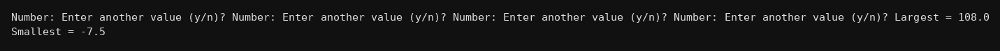

package basics;
import java.util.Scanner;
public class Q214 {
public static void main(String[] args) {
Scanner kb = new Scanner(System.in);
System.out.print("Number: ");
double x = kb.nextDouble();
double max = x, min = x;
System.out.print("Enter another value (y/n)? ");
String ch = kb.next();
while(ch.equals("y")){
System.out.print("Number: ");
x = kb.nextDouble();
if(x>max) max = x;
if(x<min) min = x;
System.out.print("Enter another value (y/n)? ");
ch = kb.next();
}
System.out.println("Largest = "+max);
System.out.println("Smallest = "+min);
}
}